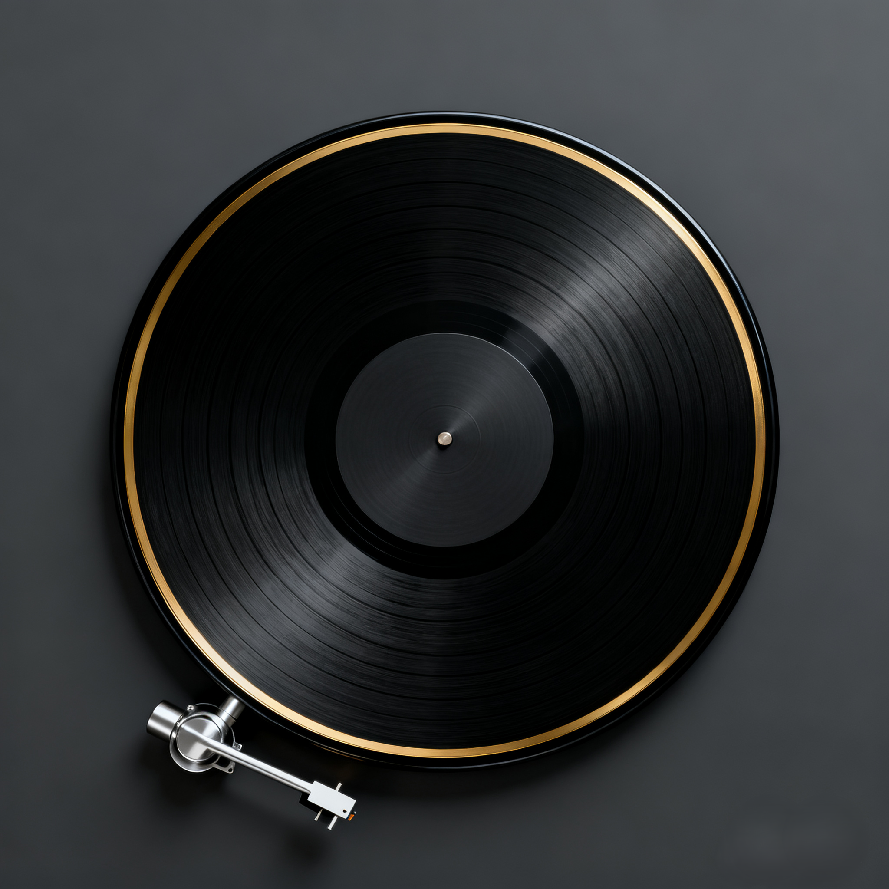

我的兴趣爱好

读书
我喜欢在安静的午后或睡前阅读，各类书籍都有所涉猎。阅读不仅能增长知识，更能让我在喧嚣中找到内心的平静。作为ISTJ，我习惯做读书笔记，整理书中的要点和自己的思考。

听音乐
音乐是我生活中不可或缺的陪伴，没有特别的偏爱。不同的心境会选择不同的音乐，让旋律帮助我放松或集中注意力。

舞蹈
曾经学习过中国舞，这段经历培养了我的节奏感和身体协调性。虽然现在练习不多，但舞蹈让我学会了用身体表达情感，也锻炼了我的专注力和毅力。